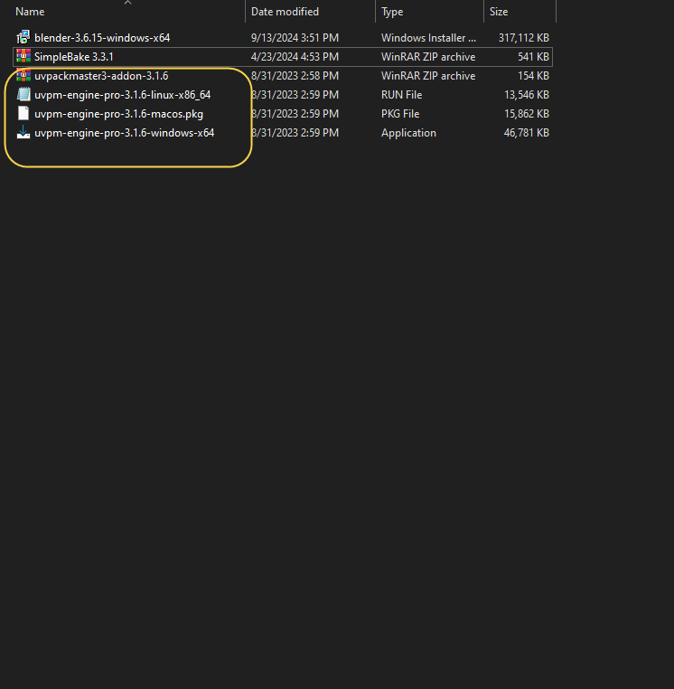
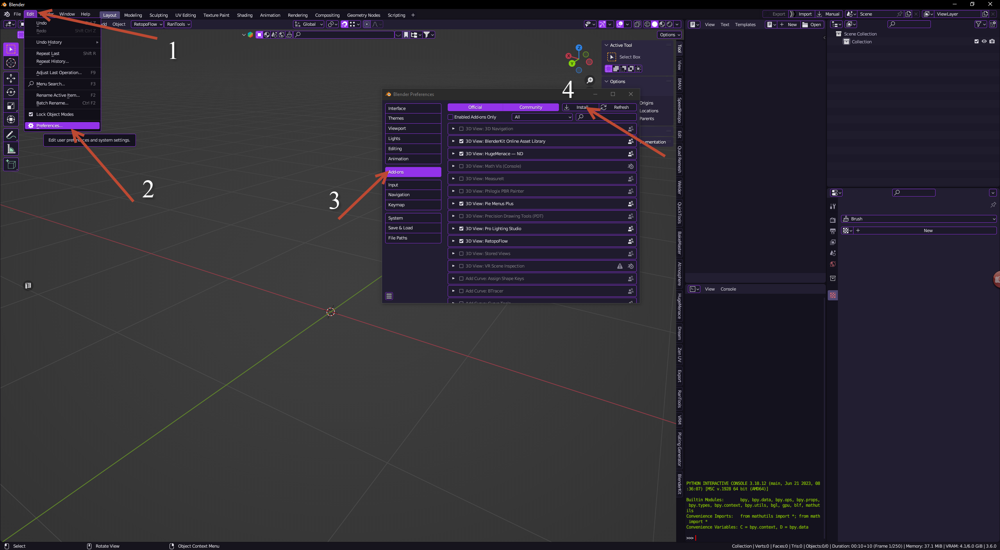
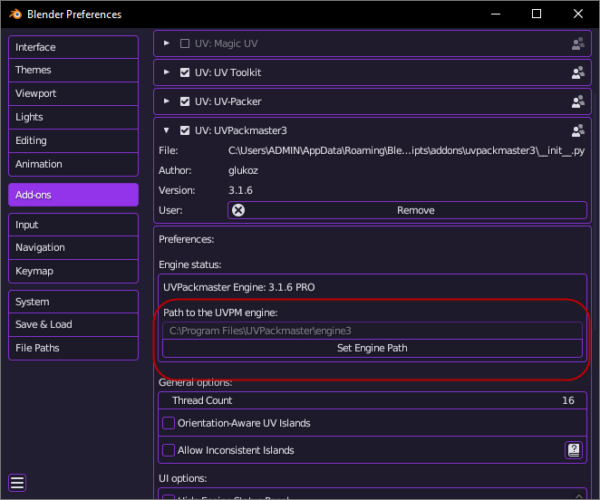

Cài như bình thường
SimpleBake 3.3.1 . giữ file zip
UV_Packmaster_3.1.6.rar . Extract sẽ ra 4 File này
Dùng Win thì cài file này trước uvpm-engine-pro-3.1.6-windows-x64
Theo hình
tới Bước 4 chọn nơi thư mục chứa file SimpleBake 3.3.1.zip
tới Bước 4 chọn nơi thư mục chứa file uvpackmaster3-addon-3.1.6.zip
Check lại có phần này chưa